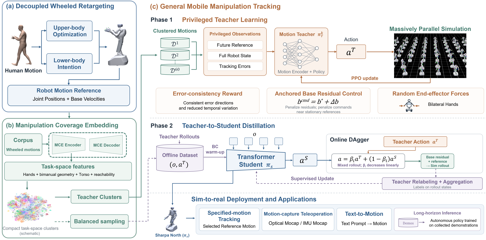

Wheeled-WBC: Manipulation-Oriented Whole-Body Control for Wheeled Humanoid Robots
Abstract
Wheeled-base humanoid robots require controllers that bridge embodiment gaps, balance manipulation coverage, and stabilize dextrous mobile manipulation. We present Wheeled-WBC, a manipulation-oriented whole-body control framework trained on over 210 hours of human motion. Decoupled Wheeled Retargeting preserves locomotion intent and upper-body precision. Manipulation Coverage Embedding guides task-space teacher partitioning and balanced distillation. General Mobile Manipulation Tracking regularizes base residuals and end-effector error consistency, distilling privileged teachers into a unified Transformer policy via DAgger with progressive control transfer. Controlled same-embodiment ablations show that all three components contribute to tracking performance. Across systems' native embodiments and retargeting pipelines, Wheeled-WBC achieves 92.36% end-to-end success on unseen motions. On Sharpa North, it tracks unseen motion-capture and text-to-motion references and supports dextrous mobile teleoperation. Collected demonstrations support long-horizon autonomous policies.
Massive Training in Simulation
Teleoperation System based on Wheeled-WBC
Optical Motion Capture
IMU Motion Capture
Diverse Teleoperated Tasks with Wheeled-WBC
Zero-shot Tracking of Text-generated Motions
Autonomous Policy Learning from Collected Data
Method
{kind=link}

Wheeled-WBC converts human motions into wheeled-humanoid references through Decoupled Wheeled Retargeting (DWR). Manipulation Coverage Embedding (MCE) organizes task-space motions for specialist teachers and balanced distillation. General Mobile Manipulation Tracking (GMMT) regularizes base drift and end-effector error consistency, distilling these teachers into a unified Transformer policy for dextrous mobile manipulation.